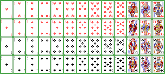
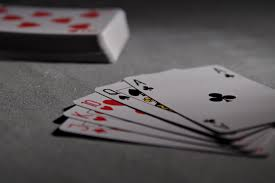

The problem with two player card games is that they tend to lack the need to think very much.


| Phase | Gameplay Explanation |
|---|---|
| 1 | Seperate the deck into numbers 2 - 10 and face cards with aces. Shuffle the face cards and deal them face down in a four by four grid. Shuffle the 36 number cards, deal 16 to each player and the remaining four face down. |
| 2 | Players look at their hands and discard four cards to form their "contract". Once both contracts have been made, dealer calls trumps. After trumps have been called, reveal the four facedown cards as the dummy. These cards are ordered. |
| 3 | Whist is now played with the lead starting at the non-dealer player. The leader can choose to end any trick by playing the top card of the dummy. If the dummy wins the trick, that trick is not counted to anyone's take and the lead is passed back to the leader of the last trick. |
| 4 | For players who make their contract (in order of who took most tricks), the player may do one of the following: secretly peak at the memory card (they can peak at as many as the number of tricks they took), play memory (revealing in total a number of cards equal to the difference in the number of tricks taken), or shuffle the remaining memory cards. |
A player wins if they collect a family of the same suit (J, Q and K).
Once you have taken a pair of a certain rank, you are forbidden from taking the remaining pair of that rank.
In the case where both players happen to take the same number of tricks (so that a 'round winner' cannot be determined), each player randomly steals that many royal cards from their opponent.
After the memory round, a player may exchange a pair of aces to shuffle an even number of their royals back into the memory cards.
They could alternatively choose to exchange four aces to shuffle all of their opponents cards back into the memory pile.